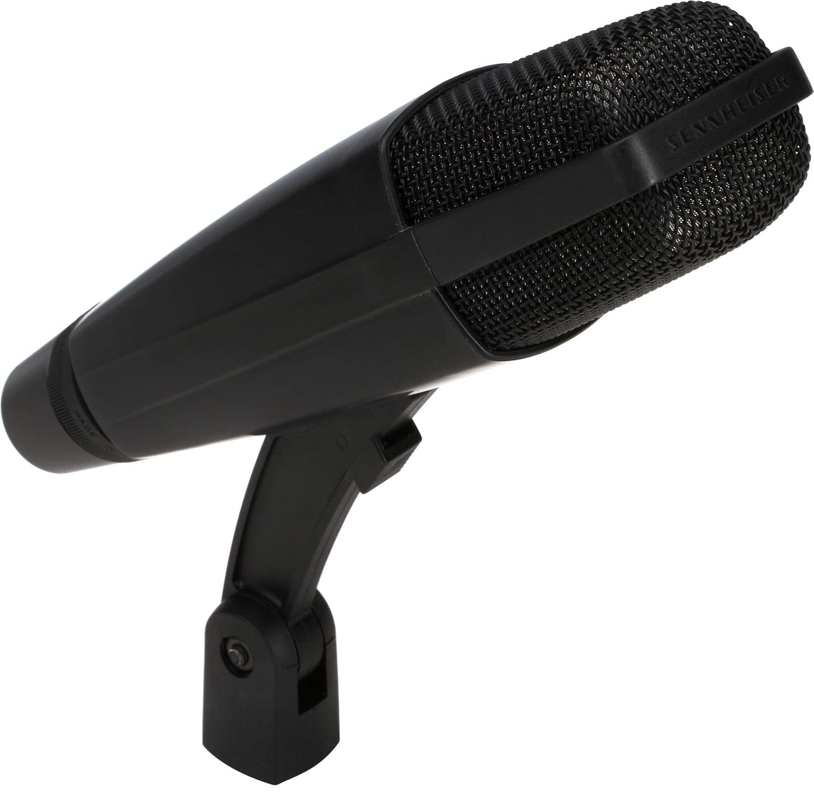
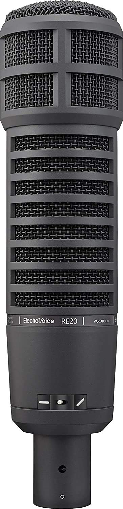

Best Microphone for Vocals & Home Recording (2026)

I've sung through everything. From $50 mics in sweaty clubs to $10,000 vintage tube condensers in world-class studios. The good news? You don't need to spend big to sound great. Here are the mics I recommend most, based on what you actually need.
Best All-Rounder Dynamic: Shure SM57
The SM57 is the most recorded microphone in history. Not hyperbole — it's a fact. It's $99, takes a beating, and sounds fantastic on guitar amps, snares, horns, and vocals. I've used SM57s on Broadway pit orchestras, Glastonbury stages, and studio sessions. Every musician should own one.

Shure SM57
$99 USD
The most recorded instrument microphone in history. Indestructible, affordable, and incredible on guitar cabs, snares, and horns. Every musician should own one.
Best Budget Condenser: Rode NT1-A
The NT1-A is famous for being the world's quietest studio condenser microphone. The self-noise is so low you can record whisper-quiet sources with zero hiss. It has a warm, smooth character that flatters most voices. The package includes a shock mount, pop filter, and XLR cable — everything you need for $269. This was my first condenser mic and I still recommend it.

Rode NT1-A
$269 USD
The world's quietest studio condenser microphone. Pristine audio quality with a warm, smooth character. Includes shock mount and pop filter.
Best Broadcast Dynamic: Shure SM7B
The SM7B is the iconic broadcast microphone — you've heard it on every major podcast, radio show, and countless records. The frequency response is smooth and warm, with excellent rejection of room noise. This is my main vocal mic in my personal studio. It needs a lot of gain, so pair it with a good interface (like the Apollo Twin X or a Cloudlifter).

Shure SM7B
$399 USD
The industry-standard dynamic microphone for broadcast, podcasting, and vocal recording. Warm, smooth sound with excellent rejection.
Best Versatile Condenser: AKG C414 XLII
The C414 is a workhorse. Five polar patterns, three pad settings, three filter settings — it can handle anything from vocals to piano to drum overheads. The top-end is slightly lifted (the 'XLII' voicing), which adds air and presence. If you're doing session work and need one mic that does it all, this is it.

AKG C414 XLII
$1.1k USD
Versatile large-diaphragm condenser with 5 polar patterns. From vocals to piano, the C414 handles it all with breathtaking detail.
Best High-End: Neumann U 87 Ai
This is the mic. The U 87 has been on more hit records than any other condenser microphone. I recorded at Abbey Road with one and I understand why it's the standard. Three polar patterns, legendary build quality, and that unmistakable Neumann top-end. At $3,599, it's an investment — but if you're building a professional studio, there's no substitute.

Neumann U 87 Ai
$3.6k USD
The world's most famous studio condenser microphone. Used on countless hit records. Three polar patterns, 10dB pad, and legendary Neumann sound.
The Live Vocal Legend: Shure SM58
If the SM57 is the instrument mic, the SM58 is its vocal twin. Same indestructible build, same legendary reliability, but with a tailored frequency response that flatters the human voice. The built-in spherical pop filter reduces plosives and wind noise — no external pop filter needed. At $99, the SM58 has been on more stages than any other microphone in history. From pub gigs to stadiums, it's the sound of live vocals.

Shure SM58
$99 USD
The world's most popular vocal microphone. Used by presidents, pop stars, and pub singers alike. Built like a tank with a tailored frequency response for vocals that cut through any mix.
The Instrument Specialist: Sennheiser MD 421
The MD 421 is a studio workhorse with a unique five-position bass roll-off switch that lets you dial in the exact low-end response for any source. It handles SPLs up to 160dB — you can stick it inside a kick drum, in front of a cranked Marshall stack, or on a screaming vocalist. Toms recorded with MD 421s have that punchy, articulate attack that's defined rock drum sounds since the 60s. At $399, it's an investment that pays for itself in one session.

Sennheiser MD 421
$399 USD
The tom-tom king and guitar cab legend. Five-position bass roll-off switch, handles SPLs up to 160dB. The industry standard dynamic for instruments since 1960.
The Broadcast King: Electro-Voice RE20
The RE20 uses Variable-D technology — essentially no proximity effect, meaning you can work the mic close without bass buildup. This makes it the gold standard for broadcast, podcasting, and voiceover work. But don't pigeonhole it — the RE20 is also a secret weapon on kick drums and bass cabs. The internal shock mount reduces handling noise, and the mid-range presence makes voices sound authoritative. At $449, it's the last broadcast mic you'll ever buy.

Electro-Voice RE20
$449 USD
The broadcast standard. Variable-D technology eliminates proximity effect. The definitive choice for podcasting, voiceover, and kick drums.
Verdict:
SM57 for versatility, SM7B for vocals
Final Thoughts
Start with an SM57 — every musician needs one. Add the NT1-A when you want cleaner vocal recordings. The SM7B is perfect if you do a lot of spoken word or want that broadcast sound. The C414 and U87 are pro-level investments. I own all of these and each has its place in my mic locker.